Quatro vertentes de abordagem para testar, validar e escalar a conversão de leads qualificados.
Vocês não precisam gravar nada, somente eu preciso gravar as animações dos sites e editar os textos e músicas.
Todo mundo que quiser pode gravar uma versão do seu rosto falando analisando os sites, e depois eu sincronizo com as animações de scroll. (se basear no roteiro, mas não seguir à risca).
Uma ou duas pessoas gravam seguindo o roteiro, fazemos as variações na edição.
Nesses vídeos o roteiro segue uma dinâmica que performa melhor para anúncio, de acordo com as minhas pesquisas.
Pensando no público, minha sugestão é que eu e a Madu gravamos esse. Na edição vou fazer uma versão mais simples e outra mais elaborada.
Testar a conversão de anúncios sem nenhuma pessoa falando ou vendendo o projeto — conquistar o lead puramente pelo visual e um texto ou outro de apoio.
Se se provar performático, é fácil de testar variações — sempre que existir um site novo ou uma frase que pode ajudar a converter, conseguimos criar mais variações em minutos.
Não sei se funciona. É fase de testes.
Não tem roteiro definido. Precisa dos takes e, depois, é testar frases, músicas e botões de CTA.
Alguém do time assume o papel de Creator e fala do projeto como se fosse alguém de fora — segue a lógica de vender o trabalho bom de outra pessoa, sem autopromoção.
Isso tem que soar extremamente natural — parecer que foi o vídeo de um influencer repostado pela página da Nacional.
Segue também a lógica de que anúncios que mostram o produto (site) como principal e logo no início performam melhor.
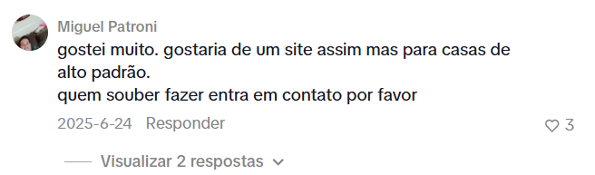
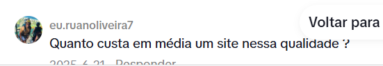
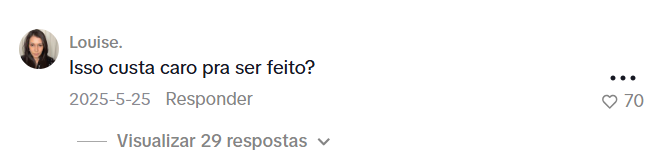
Esta etapa não segue um roteiro rígido — trata-se de sugestões de abordagem para a análise de cada seção do site. Cada pessoa deve conduzir sua própria análise, preservando a essência da estrutura proposta, com destaque para o UGC e o CTA.
Os vídeos são gravados individualmente e, por definição, quem grava não atende o cliente correspondente: o atendimento é redirecionado a outro membro da equipe, para que o autor do vídeo não seja associado à empresa.
A recomendação é ler o roteiro para absorver a ideia central e, durante a gravação, falar de forma espontânea enquanto navega pelo site — a naturalidade é o que sustenta o formato.
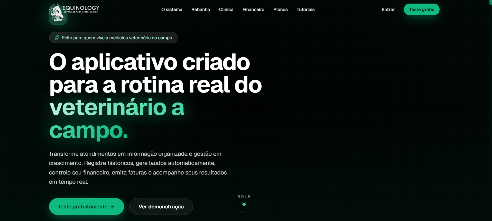
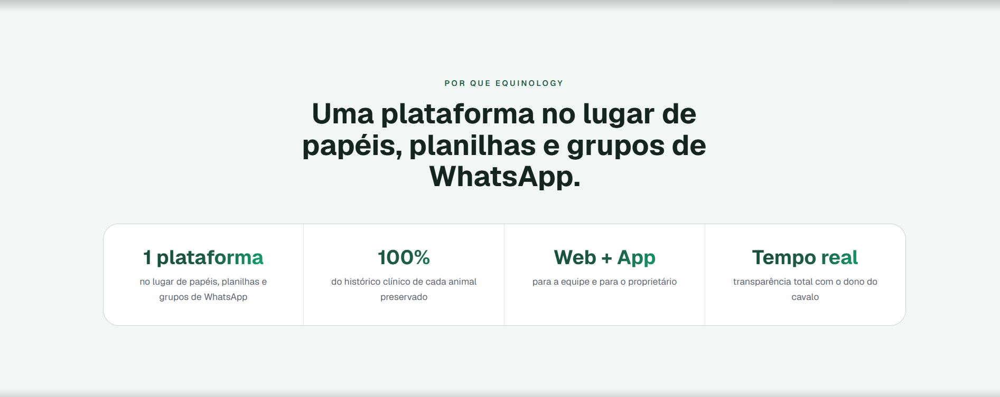
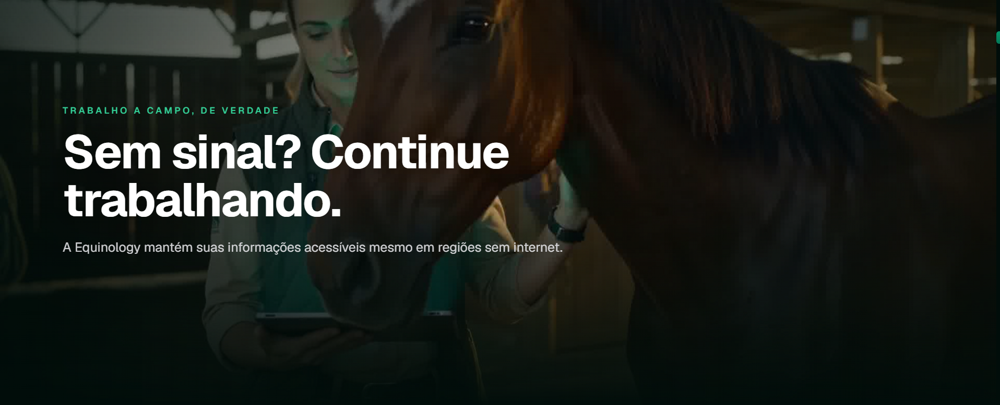
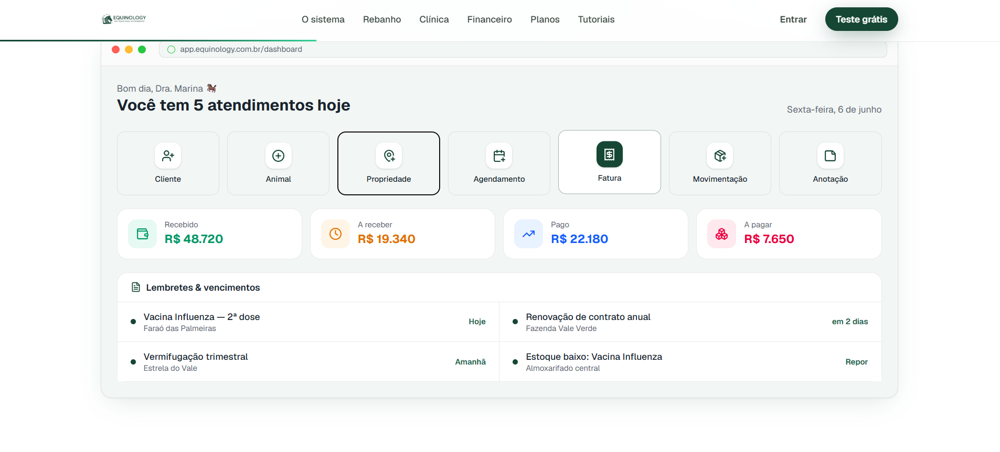
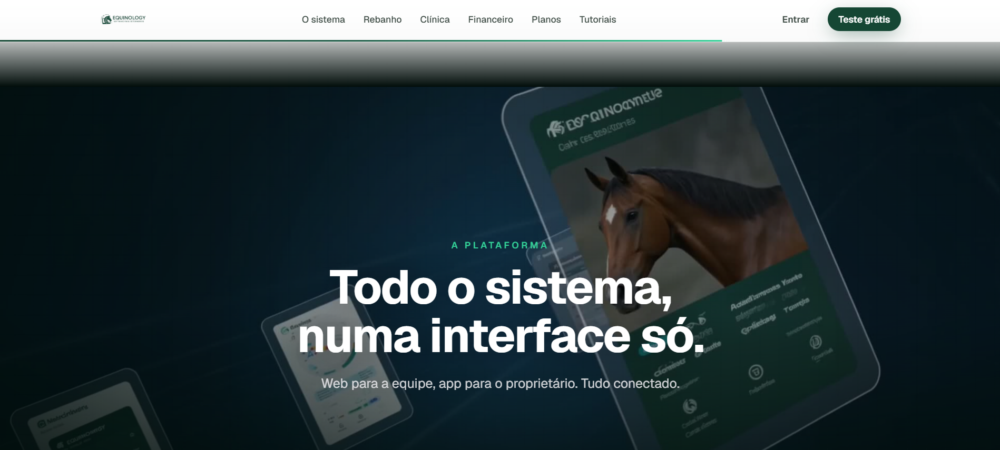
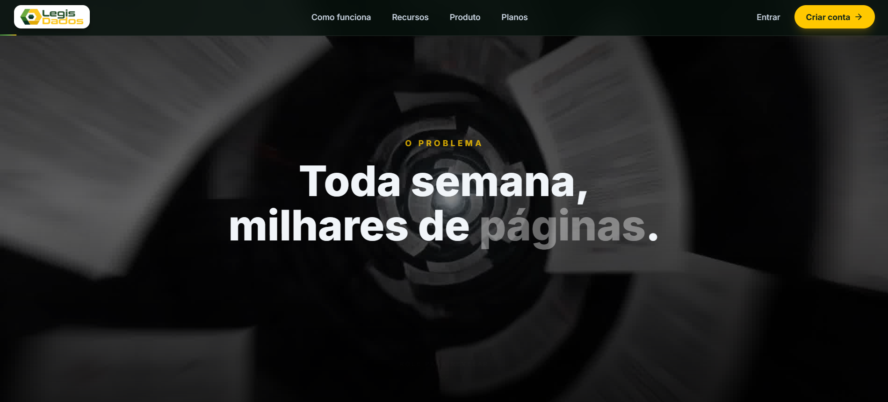
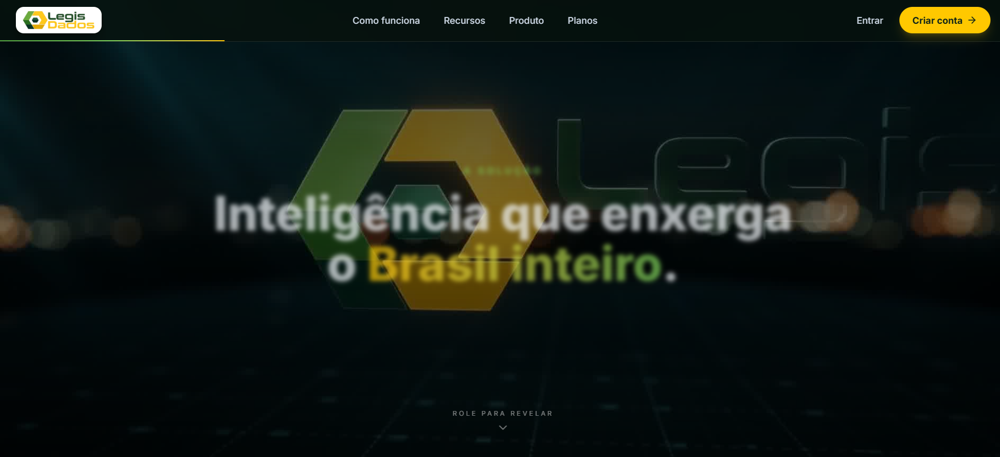
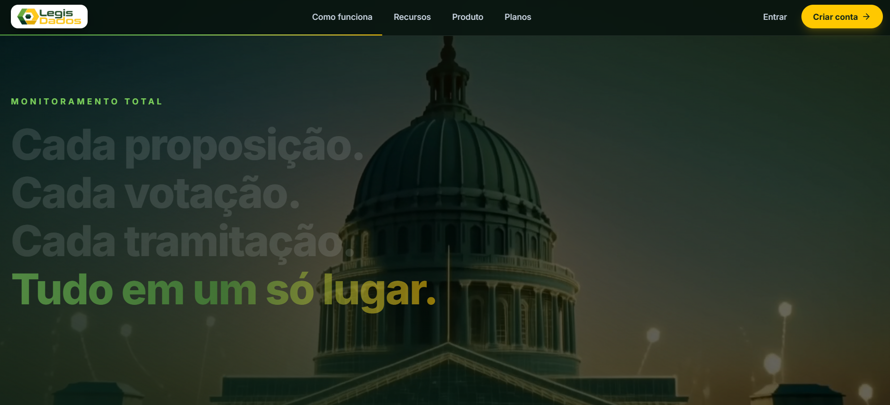
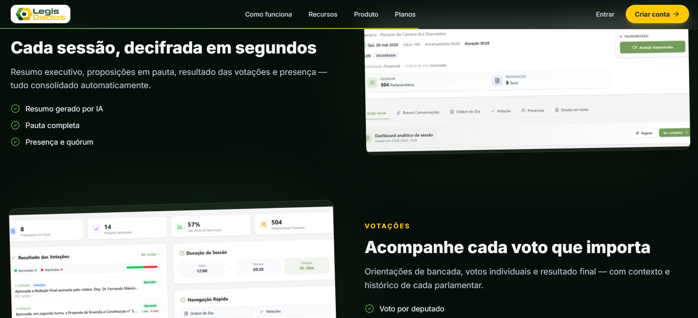
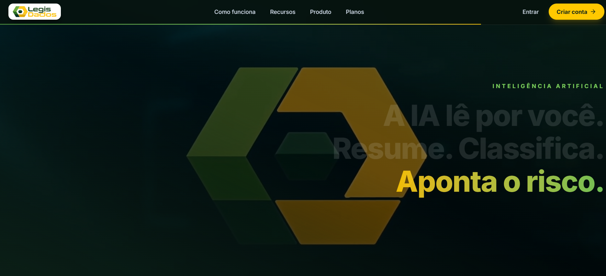
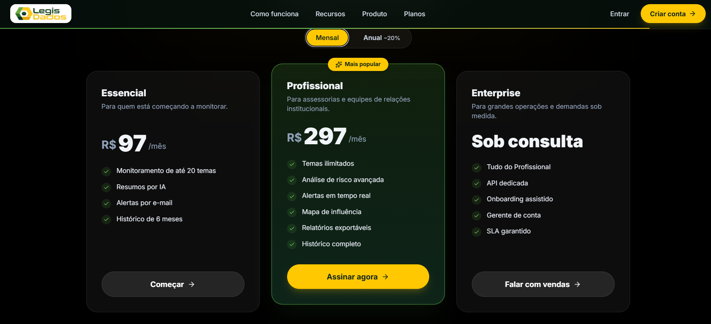
Trabalhar focado na dor geral do público — não chegar falando "seu site é ruim", mas simpatizar com dores generalistas e relacioná-las ao site.
O meio do texto permanece fixo. A gente varia Hook, CTA e a pessoa falando. Um roteiro rende ~6 vídeos pra testar performance facilmente.
Trabalhou-se a quebra de duas crenças limitantes: tempo e dinheiro.
Ancorei o preço na casa dos 15k, mencionei que hoje está mais barato — então (na minha cabeça, me corrijam se eu estiver errado) o cliente já vem imaginando algo entre 4–6k facilmente. Talvez a gente perca um ou outro de 10k/15k, mas acho que aumentará muito o retorno por parte dos leads dispostos a pagar entre 4–6k, e aí no final fica elas por elas.
Edição variada: alguns stories casuais, outros reels mais editados. Em um o site aparece logo de cara, em outros não — testamos e validamos a tese.
Direcionar anúncios para públicos específicos com poder aquisitivo — aumentar a conversão de leads qualificados.
Além de ser um nicho com dinheiro, é um nicho que preza muito pela aparência. Um discurso relacionado ao valor agregado, à busca por pacientes melhores e à forma de se posicionar é exatamente o que compra essa galera.
Sugestão: Começar pelas clínicas lideradas por mulheres e deixar esses anúncios e reuniões com quem tem melhor fit de abordagem para esse perfil de cliente.